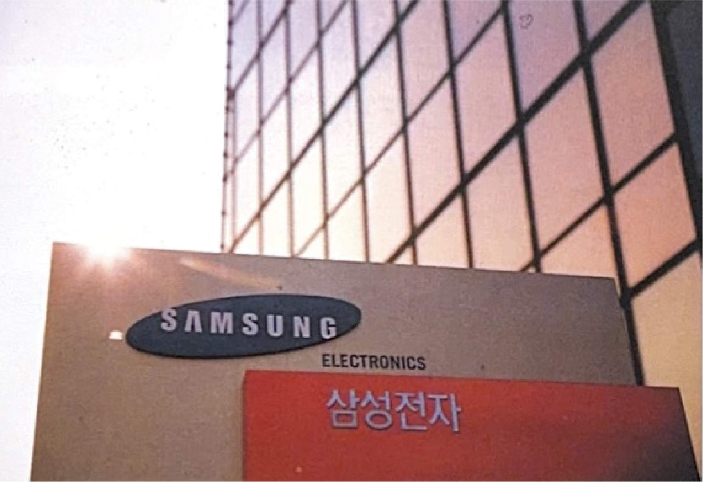
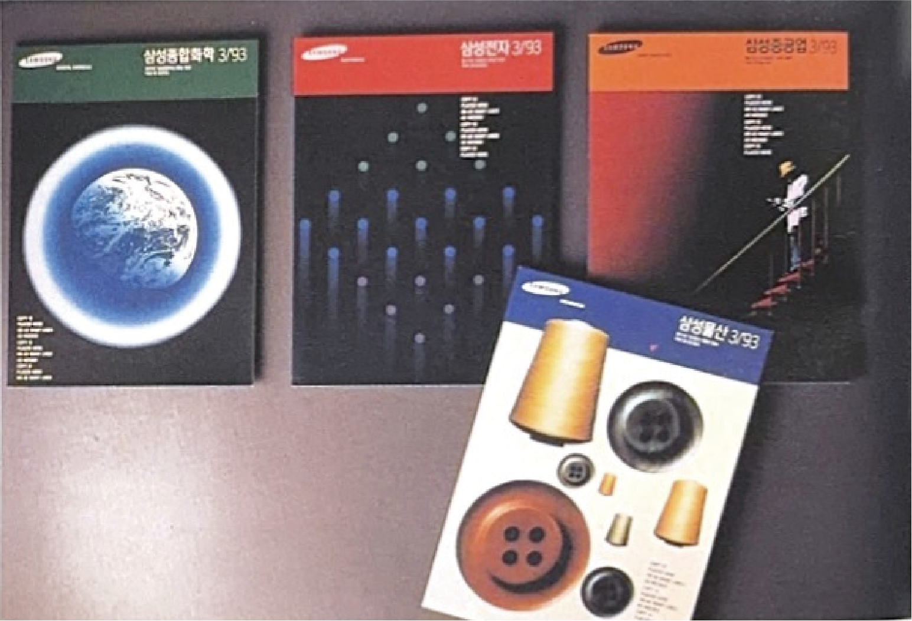
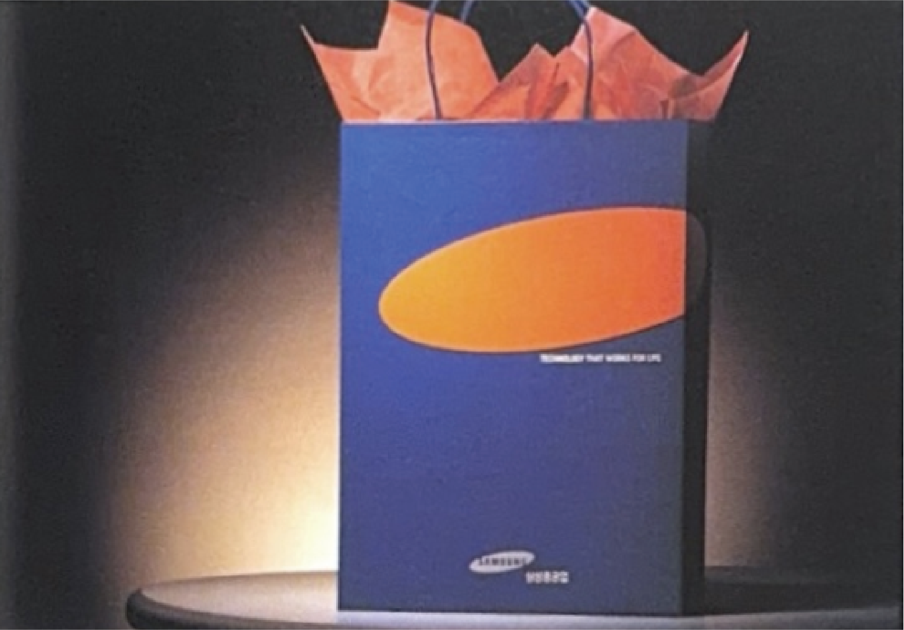
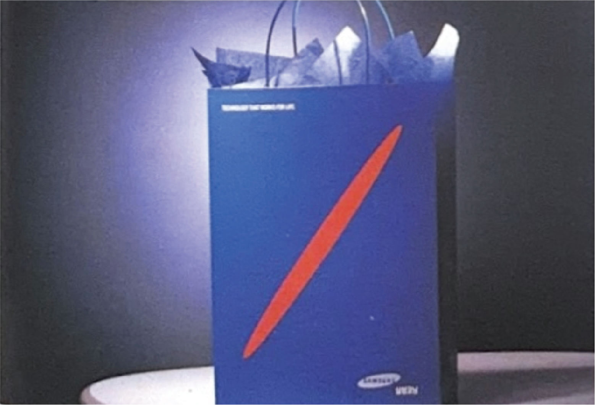
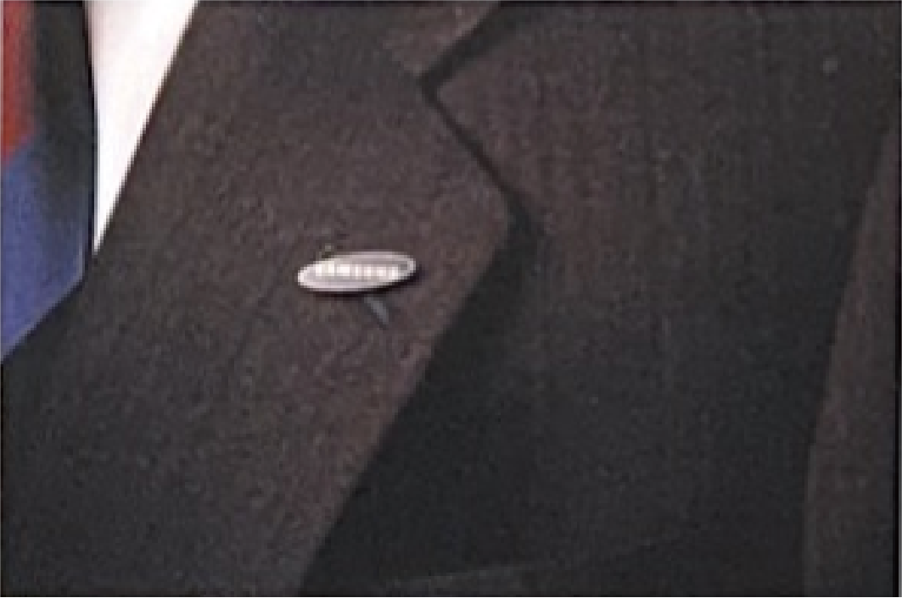
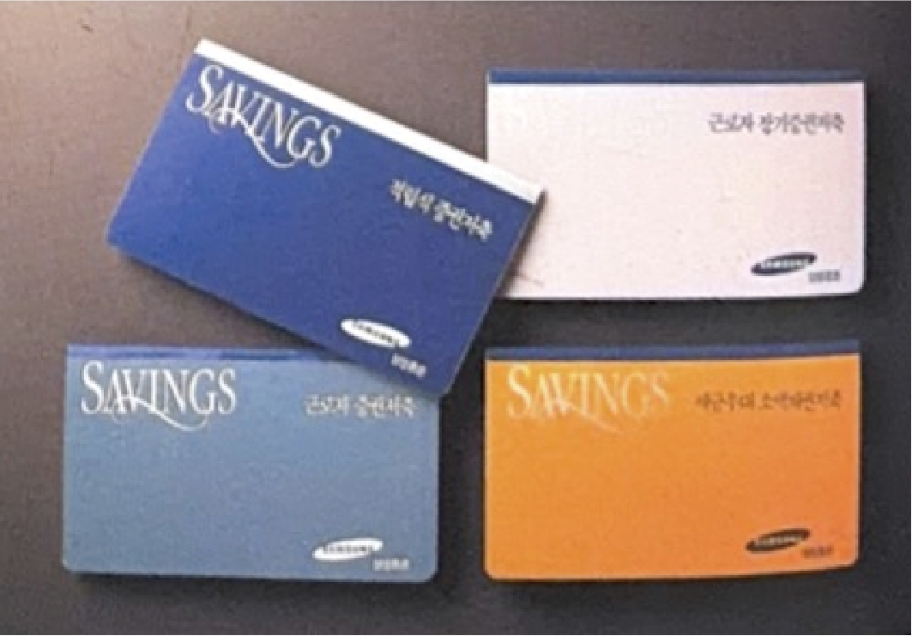
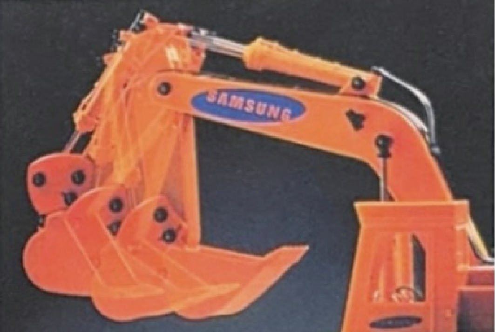
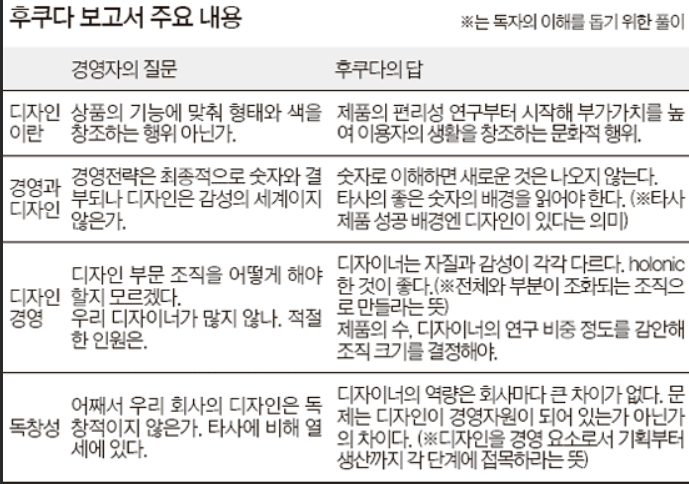

1993
글로벌 시대, 글로벌 그룹, 글로벌 CI
새로운 오벌 마크(Oval Mark)의 특징과 L&M 디자인
삼성은 글로벌 일류 브랜드로의 완전한 재탄생을 선포하기 위해 창업주 이래 55년간 수호해 왔던 별 모양 심볼을 로고에서 과감히 폐기했다.
미국의 저명한 기업 아이덴티티 개발 전문 기업인 L&M 사와 비밀리에 프로젝트를 진행하여 전 세계적으로 통용될 수 있는 새로운 파란색 타원형 '오벌 마크' CI를 완성했다.
1993
글로벌 시대, 글로벌 그룹, 글로벌 CI
새로운 오벌 마크(Oval Mark)의 특징과 L&M 디자인
삼성은 글로벌 일류 브랜드로의 완전한 재탄생을 선포하기 위해 창업주 이래 55년간 수호해 왔던 별 모양 심볼을 로고에서 과감히 폐기했다.
미국의 저명한 기업 아이덴티티 개발 전문 기업인 L&M 사와 비밀리에 프로젝트를 진행하여 전 세계적으로 통용될 수 있는 새로운 파란색 타원형 '오벌 마크' CI를 완성했다.
타원(Oval Frame)
60도 정도 기울어진 비스듬한 타원은 지구와 은하계, 그리고 한계가 없는 무한한 세계 무대와 우주를 뜻하며 동적인 사선 구도로 혁신의 추진력을 암시한다.
알파벳 가로선 삭제(SΛMSUNG)
영문 워드마크 중 알파벳 'A'에서 중간의 가로막대를 과감히 제외한 고유의 커스텀 서체(Universe Condensed Bold 바탕)를 특허 출원했다.
이는 기존의 경색된 관습적 사고의 한계를 넘어선 파괴적 창조성과 대외적인 개방성을 완벽하게 상징한다.
오벌 마크 오른쪽 하단 정렬 배치
당시 디자인 표준 규정은 타원의 우측 하단부에 일정한 비율로 관계사명을 가독성 높게 명기하는 구조적 레이아웃을 취했다
조직적 저항과 오너십의 통일
새로운 로고 도입 과정에서 내부의 전통적인 고위 고문급 임직원들은 사상 초유의 거부감을 강하게 표현했다. 특히 안국화재, 한국안전시스템 등 삼성이란
한글 사명을 정면에 내세우지 않던 전통 금융 및 서비스 계열사들은 사명을 일괄적으로 '삼성' 브랜드로 강제 통일하여 정렬할 경우 영업 및 고객 확보에 심대한 차질을 입을 수 있다고 반발했다.
그러나 오너가의 강력한 개혁 드라이브와 신경영 기조 하에 브랜드 단일화 작업이 일괄 집행되었고, 이는 각자도생하던 계열사 군단을 단일 브랜드 파워 아래 완전히 결속시키는 결정적 계기가 되었다.

삼성전자의 옥외 사인보드

삼성그룹 계열사별 사보

삼성중공업의 쇼핑백

삼성코닝의 쇼핑백

삼성그룹의 뱃지

삼성증권 통장 디자인

삼성중공업의 중장비

이건희 선대회장의
프랑크푸르트 신경영 선언
'후쿠다 보고서'와 디자인 혁신의 촉발
신경영 선언의 사상적 단초가 된 중요 핵심 문서는 당시 삼성전자의 디자인 고문이었던 후쿠다 타미오가 작성한 56페이지 분량의 이른바 '후쿠다 보고서'였다.
그는 보고서를 통해 내부 최고경영진과 엔지니어들이 디자이너를 바라보는 협소한 시각, 그리고 조잡한 디자인 개발 체계를 조목조목 비판했다.
이건희 선대회장은 이를 근본적인 문제로 간주하고 "앞으로는 디자인하는 사람이 최고로 대우받는 시대가 될 것"이라 선포하며 경영 혁신의 정점에 디자인을 배치했다.
 SGH-T100 2002년에 출시된 이건희폰
획기적인 조직 및 사업 구조의 재정비
연구개발(R&D) 및 전시 혁신
선진 우수 제품과의 밀착 비교 전시회를 열어 설계 결함을 현장에 생생히 노출하고 장기 투자와 원천 기술 확보에 전력했다.
제조 라인스톱제 도입
부품 품질 하자가 발견되는 즉시 생산 공장 컨베이어 벨트 전체를 세우는 초강수 제도를 시행했다.
디자인 및 상품기획 조직 개편
그간 종합연구소 산하에 부속되어 있던 디자인 개발실을 독립시키고 상품기획 부서와 직접 결합하여 '상품기획센터'를 신설함으로써 기획에서 디자인까지 완벽한 일관성을 다졌다.
S급 디자인 인재 육성
대학생들에게 무제한의 창의 교육 공간을 제공하는 '삼성디자인멤버십'을 1993년 설립하여 이후 전사적 혁신을 이끌 디자인 전사 육성 인프라를 마련했다.
1995년 구미 불량 제품 화형식: 불량률을 근절하기 위한 가혹한 자기반성 책책으로 무선전화기 등
대규모 결함품을 모아 불태운 일명 '구미사업장 폐기 화형식'을 통해 품질 제일주의 체질을 정착시켰다.
SGH-T100 2002년에 출시된 이건희폰
획기적인 조직 및 사업 구조의 재정비
연구개발(R&D) 및 전시 혁신
선진 우수 제품과의 밀착 비교 전시회를 열어 설계 결함을 현장에 생생히 노출하고 장기 투자와 원천 기술 확보에 전력했다.
제조 라인스톱제 도입
부품 품질 하자가 발견되는 즉시 생산 공장 컨베이어 벨트 전체를 세우는 초강수 제도를 시행했다.
디자인 및 상품기획 조직 개편
그간 종합연구소 산하에 부속되어 있던 디자인 개발실을 독립시키고 상품기획 부서와 직접 결합하여 '상품기획센터'를 신설함으로써 기획에서 디자인까지 완벽한 일관성을 다졌다.
S급 디자인 인재 육성
대학생들에게 무제한의 창의 교육 공간을 제공하는 '삼성디자인멤버십'을 1993년 설립하여 이후 전사적 혁신을 이끌 디자인 전사 육성 인프라를 마련했다.
1995년 구미 불량 제품 화형식: 불량률을 근절하기 위한 가혹한 자기반성 책책으로 무선전화기 등
대규모 결함품을 모아 불태운 일명 '구미사업장 폐기 화형식'을 통해 품질 제일주의 체질을 정착시켰다.